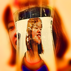

Grace Nayoon Rhee is a great friend I met for the first about four years ago in San Francisco, since then we have seen each other in lots of different places,
Im actually seeing her tomorrow as well! She has a film in an animation festival at Shattuck Theatre in Berkeley. - always blown away by what she comes up with!
March 2016